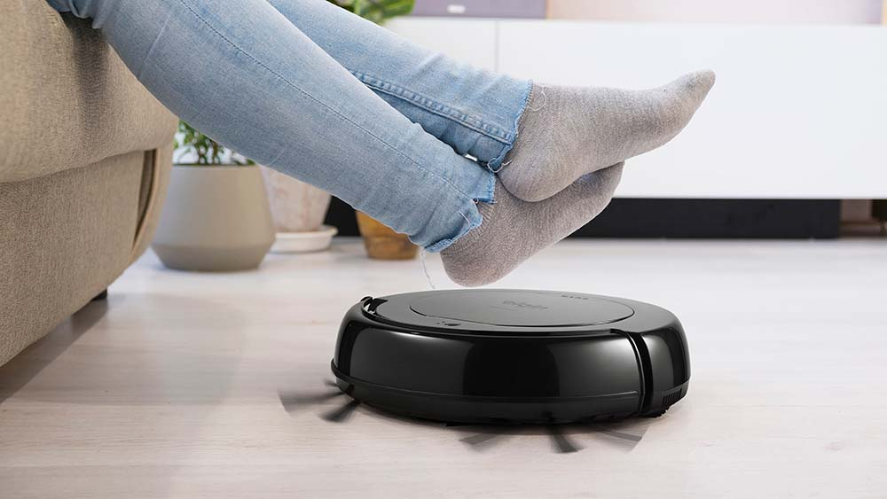
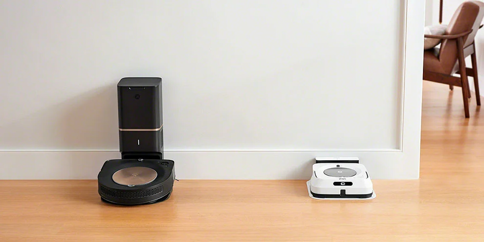

Melhor robô-aspirador custo-benefício
postado 28/05/2024 09h10 Robôs-aspiradores são inovações tecnológicas que tendem a auxiliar muito nas tarefas diárias de limpeza da casa. Atualmente, eles apresentam funções que permitem a realização simultânea de tarefas como aspirar, varrer a casa e passar pano. Além disso, escovas laterais permitem a sucção de sujeira e poeira, até mesmo em cantos e frestas. Porém, como existem muitas opções no mercado, pode ser complicado achar a alternativa perfeita para cada necessidade, com preços que podem variar entre R$ 329, no caso do Elgin Evo Robot, até R$ 1.320 do Xiaomi Mi Robot Vacuum E10.
Leia maisiRobot anuncia dois novos robôs que trabalham juntos para limpar a casa
postado 08/06/2019 às 20:00 A iRobot desenvolveu uma nova dupla de robôs residenciais, o Braava Jet M6 e o Roomba S9+, que podem trabalhar juntos para limpar os pisos e aspirar a poeira da sua casa. A interação é possível graças a um aplicativo da iRobot, que possibilita ao usuário configurar o "esfregão" Braava Jet M6 para limpar pisos de madeira e pedra só depois de serem aspirados pelo Roomba S9+, aumentando a eficiência de trabalho. Claro que a tecnologia tem um preço — bem caro, diga-se de passagem: o novo Braava custa US$ 1.299, cerca de R$ 5.000, enquanto o Roomba está disponível por US$ 499, quase R$ 2.000.
Leia maisPostagens recentes
Se você gosta do que o jogo original proporcionou, assim como os clássicos da franquia, incluindo FF6, FF8, FF9, FF10 e FF12, saiba que Rebirth carrega elementos de todos esses títulos de uma maneira harmoniosa e espetacular...
Leia maisOs notebooks pequenos oferecem uma combinação de portabilidade e desempenho que os torna interessante tanto para profissionais que precisam de fichas técnicas poderosas quanto para quem tem um uso mais casual e só quer navegar na Internet ou assistir a vídeos...
Leia mais